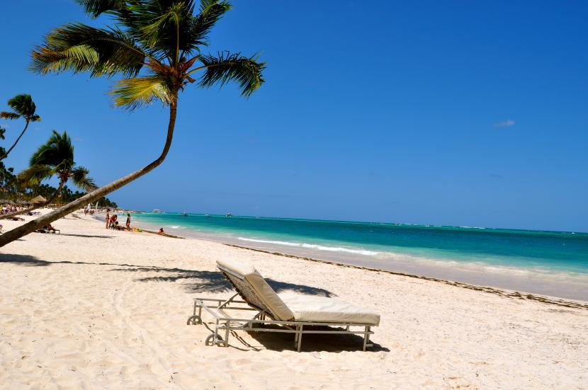
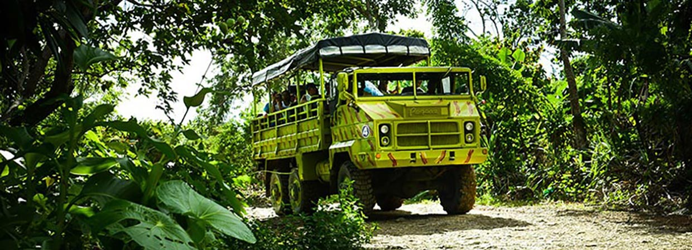
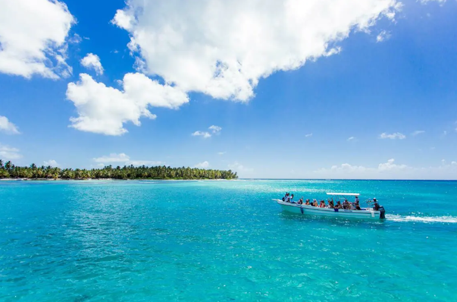
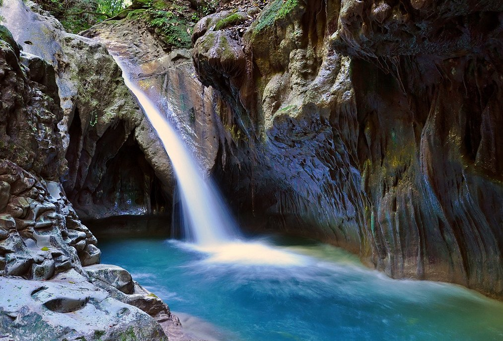
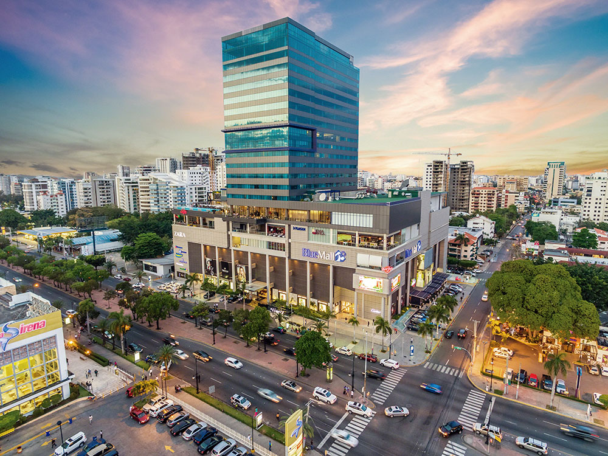
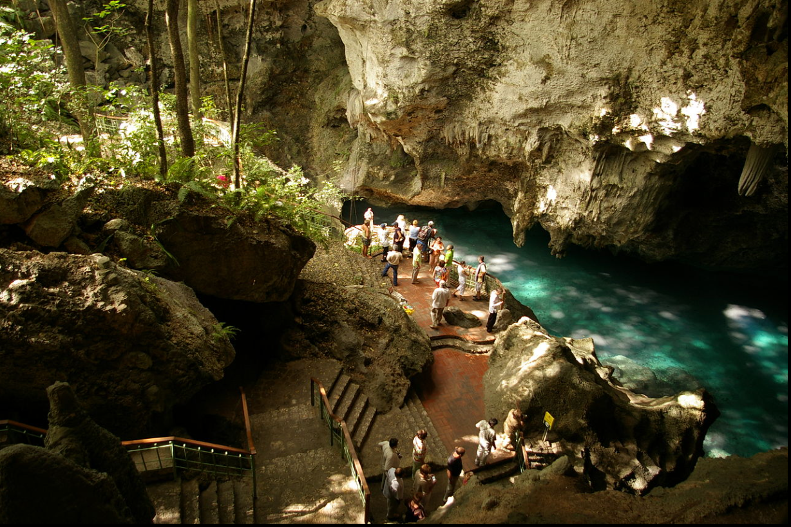

visitamos las playas
Vamos de safari en punta cana
Aprovechando la estancia en punta cana pasamos el dia con un tour en Isla Saona
Tras 3 horas de trayecto llegamos y disfrutamos de la naturaleza en Damajagua
Nos quedamos en Santo Domingo y hacemos un recorrido guiado por la ciudad
Visitamos el parque nacional Tres Ojos en Santo Domingo, después vamos nos estanciamos en la playa hasta la hora de partir
